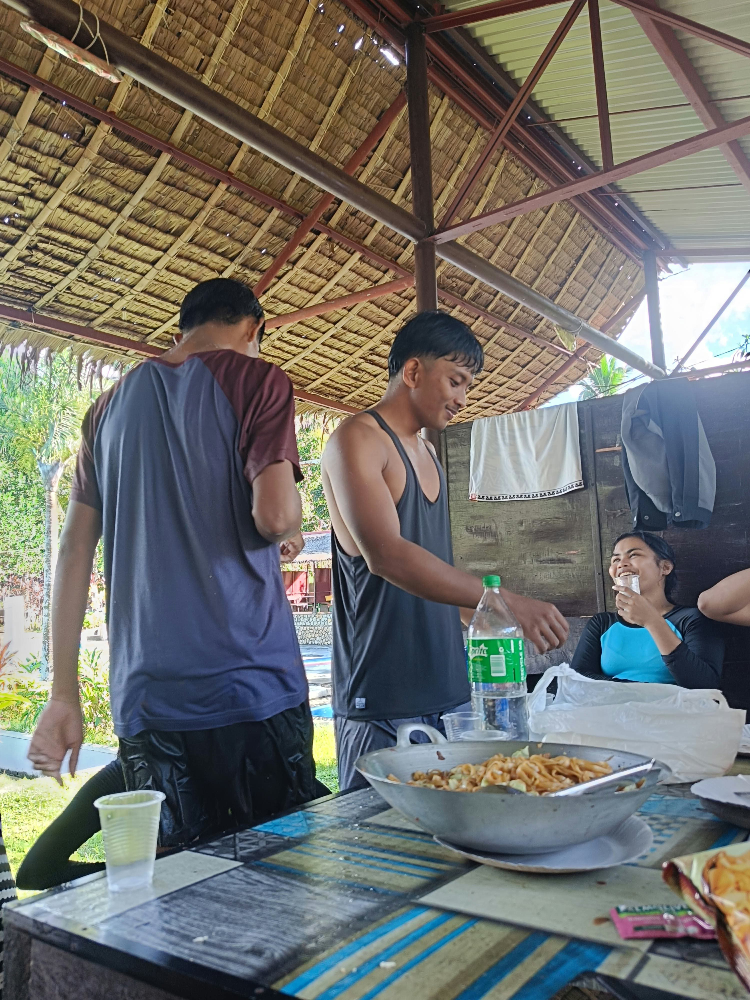

George A. Villareal
BS Information Technology
4th Year
Section B
Field Journal · BS Information Technology
A first-hand record of the seminars, webinars, and educational tours completed throughout the program — Attended by George A. Villareal, BSIT 4th Year.
Attended by George A. Villareal, BSIT 4th Year.

BS Information Technology
About
I’m a fourth-year Information Technology student documenting the seminars, tours, and industry sessions I attend throughout the program. Each entry in this journal is a record of something I picked up along the way — a tool, a trend, or a new way of thinking about the field I’m about to enter.
Group Seminar · Coordination & Narrative
Coordinated with the BSIT 4B organizing committee to bring together IT students for a closer look at how artificial intelligence is reshaping the cybersecurity landscape — from speaker outreach to attendance tracking and post-event reporting.
| Title | Last modified |
|---|---|
| Event Proposal & Program Flow | Feb 20, 2026 |
| Speaker Invitation & Confirmation Letter | Feb 24, 2026 |
| Attendance Sheet | Mar 14, 2026 |
| Post-Event Evaluation Summary | Mar 18, 2026 |
Used to collect attendee sign-ups ahead of the seminar, and feedback once it wrapped. Swap this link with your own Google Form.
Open Google FormOn March 14, 2026, I joined the online seminar “AI & Cybersecurity: Navigating the Next Digital Frontier,” organized by our BSIT 4B block as part of the program’s ongoing seminar and tour requirement. The session brought together IT students and a panel of industry practitioners to examine how artificial intelligence is changing both sides of the cybersecurity equation — as a tool for defense, and increasingly, as a tool for attack.
The first half of the seminar focused on how AI-driven systems are now used for real-time threat detection, anomaly monitoring, and automated incident response — capabilities that would have required much larger security teams only a few years ago. The second half turned the conversation around, walking through how the same technology is being used to generate more convincing phishing campaigns and to probe systems for weaknesses faster than traditional methods allow.
What stayed with me most was a point one of the speakers made almost in passing: that AI hasn’t changed the fundamentals of cybersecurity, only the speed at which both attackers and defenders now have to move. It reframed a lot of what we’ve covered in our networking and systems security classes — less about memorizing a fixed set of threats, and more about building habits that can keep up with a landscape that doesn’t hold still.
As someone about to step into the IT industry, the seminar was a useful reminder that the tools will keep changing, but the underlying discipline — asking what could go wrong, and building for it — won’t. It’s a habit I want to carry into my own work, starting with how I approach my capstone project this term.
Archive
Five seminars and tours completed across the Course. Select any entry to open its narrative report, documentation, and certificate.
End of archive · Five seminars attended · AY 2025–2026